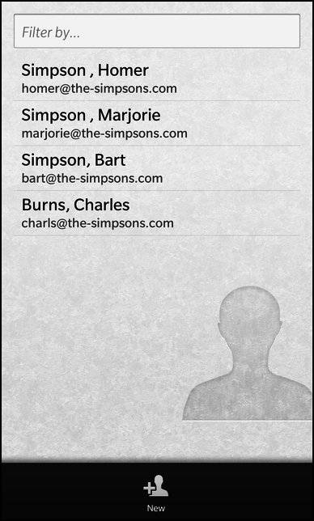

Address Book Example
Files:
- pim/addressbook/assets/ContactEditor.qml
- pim/addressbook/assets/ContactViewer.qml
- pim/addressbook/assets/ViewerField.qml
- pim/addressbook/assets/main.qml
- pim/addressbook/src/AddressBook.cpp
- pim/addressbook/src/AddressBook.hpp
- pim/addressbook/src/ContactEditor.cpp
- pim/addressbook/src/ContactEditor.hpp
- pim/addressbook/src/ContactViewer.cpp
- pim/addressbook/src/ContactViewer.hpp
- pim/addressbook/src/main.cpp
- pim/addressbook/addressbook.pro
- pim/addressbook/translations/addressbook.pro
Description
The Address Book example is a simple address book application to list, view, edit and delete the contacts available on the system or create new ones.



Overview
In this example we'll learn how to use the bb::pim::contact API of the BB10 framework to work with the contacts available on the system.
The application has a clean separation between business logic and UI representation. All the business logic is encapsulated inside the three C++ classes AddressBook, ContactViewer and ContactEditor. These classes use the bb::pim::contact API internally to communicate with the contact service of BB10 and provide all the necessary functionality and data to the UI via properties, signals and slots. The AddressBook object is exported to the UI under the name '_addressBook'.
The UI
The UI of this sample application consists of four pages:
- The main page
- The 'view contact' page
- The 'edit contact' page
- The 'create new contact' page
The main page
The main page contains a ListView that displays a list of contacts and a TextField where the user can type in a text which is used as filter criterion for the list.
// The contact list filter input TextField { hintText: qsTr ("Filter by...") onTextChanging: _addressBook.filter = text }
Whenever the content of the TextField is changed by the user, the 'filter' property of the exported AddressBook object is updated.
// The list view with all contacts ListView { dataModel: _addressBook.model listItemComponents: ListItemComponent { type: "item" StandardListItem { title: qsTr ("%1, %2").arg(ListItemData.lastName).arg(ListItemData.firstName) description: ListItemData.email } } onTriggered: { clearSelection() select(indexPath) _addressBook.setCurrentContact(indexPath) _addressBook.viewContact(); navigationPane.push(contactViewer.createObject()) } }
The ListView uses the model provided by the AddressBook object as data model and shows the first name, last name and email properties inside the items.
Whenever the user clicks on an item, setCurrentContact() is called on the AddressBook object, which will mark the selected contact as the 'current' contact for viewing and editing. Afterwards the viewContact() method is invoked on the AddressBook object. This will setup the ContactViewer object to make the data of the current contact available to the 'view contact' page. Finally, the 'view contact' page is pushed on the NavigationPane.
attachedObjects: [ ComponentDefinition { id: contactEditor source: "ContactEditor.qml" }, ComponentDefinition { id: contactViewer source: "ContactViewer.qml" } ]
This page is loaded dynamically from a ComponentDefinition that references the file ContactViewer.qml
The main page also contains an ActionItem inside its action bar, which can be invoked by the user to create a new contact.
actions: [ ActionItem { title: qsTr ("New") imageSource: "asset:///images/action_addcontact.png" ActionBar.placement: ActionBarPlacement.OnBar onTriggered: { _addressBook.createContact() navigationPane.push(contactEditor.createObject()) } } ]
When the action is triggered, the createContact() method is invoked on the AddressBook object, which will setup the ContactEditor object to be in creation mode. Afterwards the 'create new contact' page is pushed on the NavigationPane. This page is loaded dynamically from a ComponentDefinition that references the file ContactEditor.qml.
The 'view contact' page
The 'view contact' page is implemented inside ContactViewer.qml and retrieves all the data to display from the ContactViewer object, which is accessible as a property of the AddressBook object.
ViewerField { horizontalAlignment: HorizontalAlignment.Fill title: qsTr ("first name") value: _addressBook.contactViewer.firstName } ViewerField { horizontalAlignment: HorizontalAlignment.Fill topMargin: 50 title: qsTr ("last name") value: _addressBook.contactViewer.lastName }
The UI of the page consists of a list of ViewerField objects (which are implemented in ViewerField.qml), one for each contact property (first name, last name, birthday and email address). These fields simply display a title text and a value text in a row. While the title texts are hard-coded, the value properties are bound against the properties provided by the ContactViewer object. So whenever the contact that is currently handled by the ContactViewer is changed, the UI will be updated automatically.
actions: [ ActionItem { title: qsTr ("Edit") imageSource: "asset:///images/action_editcontact.png" onTriggered: { _addressBook.editContact() navigationPane.push(contactEditor.createObject()) } }, DeleteActionItem { onTriggered: { _addressBook.deleteContact() navigationPane.pop() } } ]
To edit or delete the currently displayed contact, the page contains two ActionItems. If the one for deleting the contact is triggered, the deleteContact() method is invoked on the AddressBook object, which will call the appropriated methods on the bb::pim::contact API internally. If the action for editing the contact is triggered, the editContact() method is invoked on the AddressBook object, which will setup the ContactEditor object to be in editing mode and make the data of the current contact available to the 'edit contact' page. Afterwards the 'edit contact' page is pushed on the NavigationPane.
attachedObjects: [ ComponentDefinition { id: contactEditor source: "ContactEditor.qml" } ]
The 'edit contact' page is loaded dynamically from a ComponentDefinition that references the file ContactEditor.qml.
The 'edit contact' and 'create new contact' page
For creating a new contact or editing an existing one the same UI (ContactEditor.qml) is used. The underlying business object ContactEditor provides the property 'mode' to differ between the CreateMode and EditMode.
The page contains two actions in its TitleBar to create/save the current contact or cancel the operation.
titleBar: TitleBar { id: pageTitleBar // The 'Create/Save' action acceptAction: ActionItem { title: (_addressBook.contactEditor.mode == ContactEditor.CreateMode ? qsTr ("Create" ) : qsTr ("Save")) onTriggered: { _addressBook.contactEditor.saveContact() navigationPane.pop() } } // The 'Cancel' action dismissAction: ActionItem { title: qsTr ("Cancel") onTriggered: navigationPane.pop() } }
Depending on the current mode the title of the accept action is set to 'Create' or 'Save'. In both cases, an invocation of the action will call the saveContact() method on the ContactEditor object, which will do the right thing internally, depending on the current mode.
If the user selects the dismiss action, the current page is popped from the NavigationPane.
TextField { id: firstNameField hintText: qsTr ("First Name") onTextChanging: _addressBook.contactEditor.firstName = text }
For each property of a contact, the page contains an editor field (e.g. a TextField for the first name). Whenever the user changes the content of the field, the associated property of the ContactEditor object will be updated.
If the UI is in EditMode, the content of the editor fields is initialized with the values from the ContactEditor object after the UI has been created.
onCreationCompleted: { if (_addressBook.contactEditor.mode == ContactEditor.EditMode) { // Fill the editor fields after the UI has been created firstNameField.text = _addressBook.contactEditor.firstName lastNameField.text = _addressBook.contactEditor.lastName birthdayField.value = _addressBook.contactEditor.birthday emailField.text = _addressBook.contactEditor.email } }
The Business Logic
To have a clean separation between business logic and UI, the business logic is implemented in the three C++ classes AddressBook, ContactViewer and ContactEditor.
AddressBook
The AddressBook class is the central point to access the business logic from within the UI. Therefor the object is exported to QML under the name '_addressBook' inside the main function.
// Load the UI description from main.qml QmlDocument *qml = QmlDocument::create("asset:///main.qml").parent(&app); // Make the AddressBook object available to the UI as context property qml->setContextProperty("_addressBook", new AddressBook(&app));
The AddressBook object provides the list of available contacts as a custom property 'model' of type bb::cascades::GroupDataModel, so that a ListView in the UI can use it directly as its data model. Additionally the AddressBook object provides a 'filter' property to define a filter string that is applied on the list of contacts. The other two business logic objects ContactViewer and ContactEditor can be accessed through the 'contactViewer' and 'contactEditor' properties.
class AddressBook : public QObject { Q_OBJECT // The model that provides the filtered list of contacts Q_PROPERTY(bb::cascades::GroupDataModel *model READ model CONSTANT); // The pattern to filter the list of contacts Q_PROPERTY(QString filter READ filter WRITE setFilter NOTIFY filterChanged); // The viewer object for the current contact Q_PROPERTY(ContactViewer* contactViewer READ contactViewer CONSTANT); // The editor object for the current contact Q_PROPERTY(ContactEditor* contactEditor READ contactEditor CONSTANT); public: AddressBook(QObject *parent = 0); public Q_SLOTS: /** * Marks the contact with the given @p indexPath as current. */ void setCurrentContact(const QVariantList &indexPath); /** * Prepares the contact editor to create a new contact. */ void createContact(); /** * Prepares the contact editor to edit the current contact. */ void editContact(); /** * Prepares the contact viewer to display the current contact. */ void viewContact(); /** * Deletes the current contact. */ void deleteContact(); Q_SIGNALS: // The change notification signal for the property void filterChanged(); private Q_SLOTS: // Filters the contacts in the model according to the filter property void filterContacts(); private: // The accessor methods of the properties bb::cascades::GroupDataModel* model() const; QString filter() const; void setFilter(const QString &filter); ContactViewer* contactViewer() const; ContactEditor* contactEditor() const; // The central object to access the contacts service bb::pim::contacts::ContactService* m_contactService; // The property values bb::cascades::GroupDataModel* m_model; QString m_filter; // The controller object for viewing a contact ContactViewer* m_contactViewer; // The controller object for editing a contact ContactEditor* m_contactEditor; // The ID of the current contact bb::pim::contacts::ContactId m_currentContactId; };
To use the ContactViewer and ContactEditor objects as property types, they must be registered to the QML type system inside the main function as well.
// Register our custom types with QML, so that they can be used as property types qmlRegisterUncreatableType<ContactEditor>("com.example.bb10samples.pim.addressbook", 1, 0, "ContactEditor", "Usage as property type and access to enums"); qmlRegisterType<ContactViewer>();
Inside the constructor all member objects are initialized. The ContactService is the central point of the bb::pim::contact API to access contact information on the BB10 platform.
AddressBook::AddressBook(QObject *parent) : QObject(parent) , m_contactService(new ContactService(this)) , m_model(new GroupDataModel(this)) , m_contactViewer(new ContactViewer(m_contactService, this)) , m_contactEditor(new ContactEditor(m_contactService, this)) , m_currentContactId(-1) { // Disable grouping in data model m_model->setGrouping(ItemGrouping::None); // Ensure to invoke the filterContacts() method whenever a contact has been added, changed or removed connect(m_contactService, SIGNAL(contactsAdded(QList<int>)), SLOT(filterContacts())); connect(m_contactService, SIGNAL(contactsChanged(QList<int>)), SLOT(filterContacts())); connect(m_contactService, SIGNAL(contactsDeleted(QList<int>)), SLOT(filterContacts())); // Fill the data model with contacts initially filterContacts(); }
The filterContacts() method retrieves all contacts that match the specified filter from the ContactService and fills the data model with the result. The ID of the contact is stored inside the model together with the data that will be displayed in the ListView.
void AddressBook::filterContacts() { QList<Contact> contacts; if (m_filter.isEmpty()) { // No filter has been specified, so just list all contacts ContactListFilters filter; contacts = m_contactService->contacts(filter); } else { // Use the entered filter string as search value ContactSearchFilters filter; filter.setSearchValue(m_filter); contacts = m_contactService->searchContacts(filter); } // Clear the old contact information from the model m_model->clear(); // Iterate over the list of contact IDs foreach (const Contact &idContact, contacts) { // Fetch the complete details for this contact ID const Contact contact = m_contactService->contactDetails(idContact.id()); // Copy the data into a model entry QVariantMap entry; entry["contactId"] = contact.id(); entry["firstName"] = contact.firstName(); entry["lastName"] = contact.lastName(); const QList<ContactAttribute> emails = contact.emails(); if (!emails.isEmpty()) entry["email"] = emails.first().value(); // Add the entry to the model m_model->insert(entry); } }
Whenever the user changes the filter criterion, the setFilter() method is invoked, which updates the filter value and calls the filterContacts() method again.
void AddressBook::setFilter(const QString &filter) { if (m_filter == filter) return; m_filter = filter; emit filterChanged(); // Update the model now that the filter criterion has changed filterContacts(); }
Whenever the user selects a contact in the ListView, the setCurrentContact() method is invoked. If the selected index path is valid, the ID of the contact is extracted and stored as 'current' contact.
void AddressBook::setCurrentContact(const QVariantList &indexPath) { // Extract the ID of the selected contact from the model if (indexPath.isEmpty()) { m_currentContactId = -1; } else { const QVariantMap entry = m_model->data(indexPath).toMap(); m_currentContactId = entry.value("contactId").toInt(); } }
Afterwards the UI invokes the viewContact() method, that triggers the ContactViewer to load the data for the current contact.
void AddressBook::viewContact() { // Prepare the contact viewer for displaying the current contact m_contactViewer->setContactId(m_currentContactId); }
If the user triggers the 'Delete' action from the 'view contact' page, deleteContact() is invoked, which forwards this request to the ContactService.
void AddressBook::deleteContact() { m_contactService->deleteContact(m_currentContactId); }
If the user wants to edit the current contact, the UI calls editContact(), which triggers the ContactEditor to load the data of the current contact and switches the ContactEditor into EditMode.
void AddressBook::editContact() { // Prepare the contact editor for editing the current contact m_contactEditor->loadContact(m_currentContactId); m_contactEditor->setMode(ContactEditor::EditMode); }
If the user wants to create a new contact, the UI calls createContact(), which resets the ContactEditor and switches it into CreateMode.
void AddressBook::createContact() { // Prepare the contact editor for creating a new contact m_contactEditor->reset(); m_contactEditor->setMode(ContactEditor::CreateMode); }
ContactViewer
The ContactViewer class is an UI-independent representation of the contact viewer, that provides all the functionality and data as slots and properties. It encapsulates all the logic of loading a contact from the persistent storage, provides its data as properties and updates the properties automatically if the contact has changed in the storage backend.
class ContactViewer : public QObject { Q_OBJECT // The data properties of the contact that is displayed Q_PROPERTY(QString firstName READ firstName NOTIFY firstNameChanged) Q_PROPERTY(QString lastName READ lastName NOTIFY lastNameChanged) Q_PROPERTY(QDateTime birthday READ birthday NOTIFY birthdayChanged) Q_PROPERTY(QString formattedBirthday READ formattedBirthday NOTIFY birthdayChanged) Q_PROPERTY(QString email READ email NOTIFY emailChanged) public: ContactViewer(bb::pim::contacts::ContactService *service, QObject *parent = 0); // Sets the ID of the contact that should be displayed. void setContactId(bb::pim::contacts::ContactId contactId); Q_SIGNALS: // The change notification signals of the properties void firstNameChanged(); void lastNameChanged(); void birthdayChanged(); void emailChanged(); private Q_SLOTS: /** * This slot is invoked whenever the contact service reports that a contact has been changed. */ void contactsChanged(const QList<int> &ids); private: // The accessor methods of the properties QString firstName() const; QString lastName() const; QDateTime birthday() const; QString formattedBirthday() const; QString email() const; // Loads the contact from the persistent storage and updates the properties void updateContact(); // The central object to access the contact service bb::pim::contacts::ContactService* m_contactService; // The ID of the contact that is displayed bb::pim::contacts::ContactId m_contactId; // The property values QString m_firstName; QString m_lastName; QDateTime m_birthday; QString m_email; };
Inside the constructor the contactsChanged() signal of the ContactService is connected against the custom contactsChanged() slot to reload the currently displayed contact from the persistent storage if it has been changed by some other entity.
ContactViewer::ContactViewer(ContactService *service, QObject *parent) : QObject(parent) , m_contactService(service) , m_contactId(-1) { // Ensure to invoke the contactsChanged() method whenever a contact has been changed connect(m_contactService, SIGNAL(contactsChanged(QList<int>)), SLOT(contactsChanged(QList<int>))); }
The method setContactId() is invoked by the AddressBook object to prepare the viewer to display a contact in the UI. In this method the passed ID is stored locally and updateContact() is called afterwards.
void ContactViewer::setContactId(ContactId contactId) { if (m_contactId == contactId) return; m_contactId = contactId; // Trigger a refetch of the contact for the new ID updateContact(); }
Inside updateContact() the actual contact data are loaded from the persistent storage through the ContactService object. If the value of a contact property has changed, the change notification signal is emitted.
void ContactViewer::updateContact() { // Store previous values const QString oldFirstName = m_firstName; const QString oldLastName = m_lastName; const QDateTime oldBirthday = m_birthday; const QString oldEmail = m_email; // Fetch new values from persistent storage const Contact contact = m_contactService->contactDetails(m_contactId); m_firstName = contact.firstName(); m_lastName = contact.lastName(); m_birthday = QDateTime(); const QList<ContactAttribute> dateAttributes = contact.filteredAttributes(AttributeKind::Date); foreach (const ContactAttribute &dateAttribute, dateAttributes) { if (dateAttribute.subKind() == AttributeSubKind::DateBirthday) m_birthday = dateAttribute.valueAsDateTime(); } m_email.clear(); const QList<ContactAttribute> emails = contact.emails(); if (!emails.isEmpty()) m_email = emails.first().value(); // Check whether values have changed if (oldFirstName != m_firstName) emit firstNameChanged(); if (oldLastName != m_lastName) emit lastNameChanged(); if (oldBirthday != m_birthday) emit birthdayChanged(); if (oldEmail != m_email) emit emailChanged(); }
The custom slot contactsChanged() checks whether the currently displayed contact is in the change set and calls updateContact() accordingly.
void ContactViewer::contactsChanged(const QList<int> &contactIds) { /** * Call updateContact() only if the contact we are currently displaying * has been changed. */ if (contactIds.contains(m_contactId)) updateContact(); }
ContactEditor
The ContactEditor class is an UI-independent representation of the contact editor, that provides all the functionality and data as slots and properties. It encapsulates all the logic of creating a new contact or updating an existing one.
class ContactEditor : public QObject { Q_OBJECT // The data properties of the contact that is created or updated Q_PROPERTY(QString firstName READ firstName WRITE setFirstName NOTIFY firstNameChanged) Q_PROPERTY(QString lastName READ lastName WRITE setLastName NOTIFY lastNameChanged) Q_PROPERTY(QDateTime birthday READ birthday WRITE setBirthday NOTIFY birthdayChanged) Q_PROPERTY(QString email READ email WRITE setEmail NOTIFY emailChanged) // Defines whether the editor is in 'create' or 'edit' mode Q_PROPERTY(Mode mode READ mode WRITE setMode NOTIFY modeChanged) Q_ENUMS(Mode) public: /** * Describes the mode of the contact editor. * The mode information are used to adapt the behavior of the editor and * provide hints to the UI. */ enum Mode { CreateMode, EditMode }; ContactEditor(bb::pim::contacts::ContactService *service, QObject *parent = 0); void setMode(Mode mode); Mode mode() const; public Q_SLOTS: /** * Loads the contact with the given ID. */ void loadContact(bb::pim::contacts::ContactId contactId); /** * Save the currently loaded contact if in 'edit' mode or creates a new one * if in 'create' mode. */ void saveContact(); /** * Resets all fields of the contact editor. */ void reset(); Q_SIGNALS: // The change notification signals of the properties void firstNameChanged(); void lastNameChanged(); void birthdayChanged(); void emailChanged(); void modeChanged(); private: // The accessor methods of the properties void setFirstName(const QString &firstName); QString firstName() const; void setLastName(const QString &lastName); QString lastName() const; void setBirthday(const QDateTime &birthday); QDateTime birthday() const; void setEmail(const QString &email); QString email() const; // The central object to access the contact service bb::pim::contacts::ContactService *m_contactService; // The ID of the currently loaded contact (if in 'edit' mode) bb::pim::contacts::ContactId m_contactId; // The property values QString m_firstName; QString m_lastName; QDateTime m_birthday; QString m_email; Mode m_mode; };
Inside the constructor the member variables are initialized with the default values.
ContactEditor::ContactEditor(ContactService *service, QObject *parent) : QObject(parent) , m_contactService(service) , m_contactId(-1) , m_birthday(QDateTime::currentDateTime()) , m_mode(CreateMode) { }
If the user wants to edit an existing contact, the AddressBook object invokes loadContact() to load the contact data from the persistent storage and make them available to the UI through the properties.
void ContactEditor::loadContact(ContactId contactId) { m_contactId = contactId; // Load the contact from the persistent storage const Contact contact = m_contactService->contactDetails(m_contactId); // Update the properties with the data from the contact m_firstName = contact.firstName(); m_lastName = contact.lastName(); m_birthday = QDateTime::currentDateTime(); const QList<ContactAttribute> dateAttributes = contact.filteredAttributes(AttributeKind::Date); foreach (const ContactAttribute &dateAttribute, dateAttributes) { if (dateAttribute.subKind() == AttributeSubKind::DateBirthday) m_birthday = dateAttribute.valueAsDateTime(); } m_email.clear(); const QList<ContactAttribute> emails = contact.emails(); if (!emails.isEmpty()) m_email = emails.first().value(); // Emit the change notifications emit firstNameChanged(); emit lastNameChanged(); emit birthdayChanged(); emit emailChanged(); }
When the user clicks on the 'Create'/'Save' button in the UI, saveContact() is invoked. Depending on the current mode, a new contact is created or the current one modified. In both cases the ContactBuilder class is used to add or change the attributes of the Contact object.
void ContactEditor::saveContact() { if (m_mode == CreateMode) { // Create a builder to assemble the new contact ContactBuilder builder; // Set the first name builder.addAttribute(ContactAttributeBuilder() .setKind(AttributeKind::Name) .setSubKind(AttributeSubKind::NameGiven) .setValue(m_firstName)); // Set the last name builder.addAttribute(ContactAttributeBuilder() .setKind(AttributeKind::Name) .setSubKind(AttributeSubKind::NameSurname) .setValue(m_lastName)); // Set the birthday builder.addAttribute(ContactAttributeBuilder() .setKind(AttributeKind::Date) .setSubKind(AttributeSubKind::DateBirthday) .setValue(m_birthday)); // Set the email address builder.addAttribute(ContactAttributeBuilder() .setKind(AttributeKind::Email) .setSubKind(AttributeSubKind::Other) .setValue(m_email)); // Save the contact to persistent storage m_contactService->createContact(builder, false); } else if (m_mode == EditMode) { // Load the contact from persistent storage Contact contact = m_contactService->contactDetails(m_contactId); if (contact.id()) { // Create a builder to modify the contact ContactBuilder builder = contact.edit(); // Update the single attributes updateContactAttribute<QString>(builder, contact, AttributeKind::Name, AttributeSubKind::NameGiven, m_firstName); updateContactAttribute<QString>(builder, contact, AttributeKind::Name, AttributeSubKind::NameSurname, m_lastName); updateContactAttribute<QDateTime>(builder, contact, AttributeKind::Date, AttributeSubKind::DateBirthday, m_birthday); updateContactAttribute<QString>(builder, contact, AttributeKind::Email, AttributeSubKind::Other, m_email); // Save the updated contact back to persistent storage m_contactService->updateContact(builder); } } }
To modify an existing attribute the helper function updateContactAttribute() has been implemented.
/** * A helper method to update a single attribute on a Contact object. * It first deletes the old attribute (if it exists) and adds the attribute with the * new value afterwards. */ template <typename T> static void updateContactAttribute(ContactBuilder &builder, const Contact &contact, AttributeKind::Type kind, AttributeSubKind::Type subKind, const T &value) { // Delete previous instance of the attribute QList<ContactAttribute> attributes = contact.filteredAttributes(kind); foreach (const ContactAttribute &attribute, attributes) { if (attribute.subKind() == subKind) builder.deleteAttribute(attribute); } // Add new instance of the attribute with new value builder.addAttribute(ContactAttributeBuilder() .setKind(kind) .setSubKind(subKind) .setValue(value)); }
If the user wants to create a new contact, the AddressBook object invokes the reset() method to clear all fields of the ContactEditor.
void ContactEditor::reset() { // Reset all properties m_firstName.clear(); m_lastName.clear(); m_birthday = QDateTime::currentDateTime(); m_email.clear(); // Emit the change notifications emit firstNameChanged(); emit lastNameChanged(); emit birthdayChanged(); emit emailChanged(); }